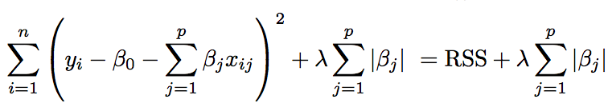
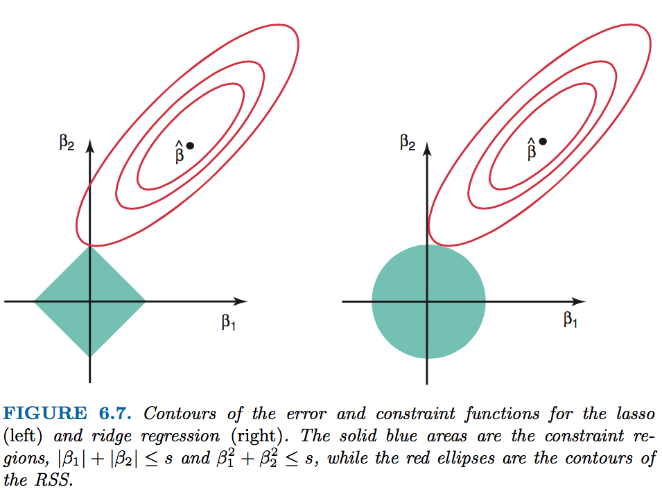
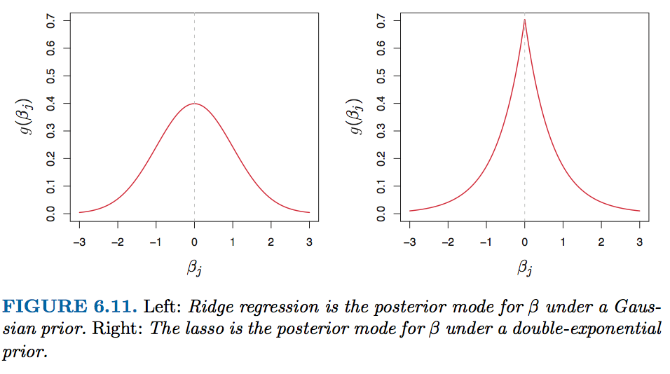
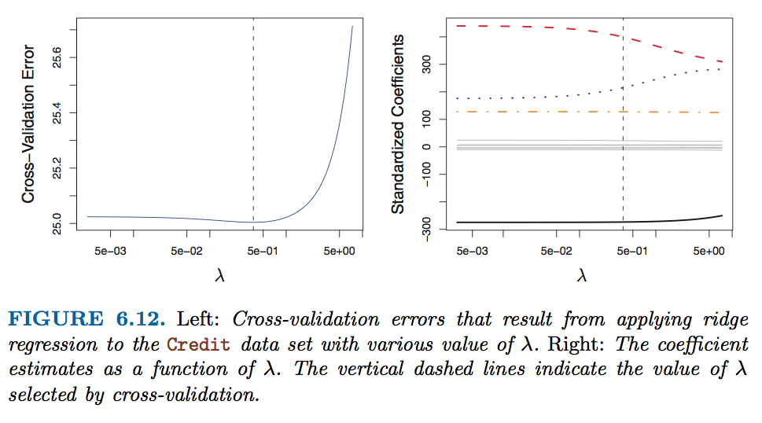
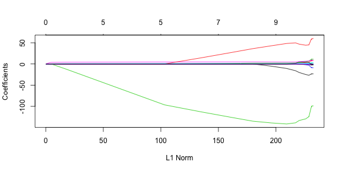
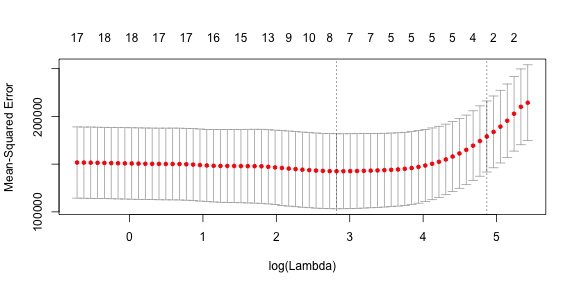

- Why Shrinkage ?
- Ridge Regression VS Lasso
- Variable Selection
- A Speicial Case
- Baesian Interpretation
- Selecting the Tuning Parameter
Shrinkage Method
Ridge and Lasso
Henrilin
剩13天的替代役
Outline
Why Shrinkage ?
Shrinkage is a general technique to improve a least-squares estimator which consists in reducing the variance by adding constraints on the value of coefficients
- improve fitting
- reduce variance
Ridge Regression

where \(\lambda \geq 0\) is a tunning parameter
\(\lambda \sum_{j=1}^{p}\beta _{j}^{2}\) -> shrinkage penalty

Ridge Regression (Continue.)

Lasso
(Least absolute shrinkage and selection operator, Tibshirani(1996))

The \(l1\) norm of a coefficient vector \(\beta\) is given by \(\left \| \beta \right \| = \sum \left | \beta_{j} \right |\)

Connection between Ridge and Lasso
Here \(I(\beta_{j} \neq 0)\) is an indicator variable: it takes on a value of 1 if \(\beta \neq 0\), and equals zero otherwise.
This equation is equal to best subset selection. However, it is computationally infeasible when \(p\) is large.
Variable Selection

A Speicial Case
\(n=p\) / \(X\), a diagonal matrix with 1’s on the diagonal and 0’s in all off-diagonal elements.

Baesian Interpretation
A Bayesian viewpoint for regression assumes that the coefficient vector \(\beta\) has some prior distribution, say \(p(\beta)\), where \(\beta = (\beta_{0},\beta_{1},...,\beta_{p})^{T}\) . The likelihood of the data can be written as f(Y |X,β), where \(X = (X_{1}, . . . , X_{p})\). \[P(\beta|X,Y) \propto f(Y|X,\beta)p(\beta|X) = f(Y|X,\beta)p(\beta)\]
assume the usual linear model,
\[ Y = \beta_{0} + X_{1}\beta_{1} + ... + X_{p}\beta_{p} + \varepsilon \]
Baesian Interpretation (Continue.)

Selecting the Tuning Parameter

Lab
load library and use model.matrix() to automatically transforms any qualitative variables into dummy variables.
library(ISLR);library(glmnet)
Hitters=na.omit(Hitters)
x=model.matrix(Salary~.,Hitters)[,-1]
y=Hitters$Salary
grid=10^seq(10,-2,length=100)
ridge.mod=glmnet(x,y,alpha=0,lambda=grid)
dim(coef(ridge.mod))
## [1] 20 100
Lab (Ridge Regression)
ridge.mod$lambda [50]
## [1] 11497.57
coef(ridge.mod)[,50]
## (Intercept) AtBat Hits HmRun Runs
## 407.356050200 0.036957182 0.138180344 0.524629976 0.230701523
## RBI Walks Years CAtBat CHits
## 0.239841459 0.289618741 1.107702929 0.003131815 0.011653637
## CHmRun CRuns CRBI CWalks LeagueN
## 0.087545670 0.023379882 0.024138320 0.025015421 0.085028114
## DivisionW PutOuts Assists Errors NewLeagueN
## -6.215440973 0.016482577 0.002612988 -0.020502690 0.301433531
Lab (Ridge Regression)
ridge.mod$lambda [60]
## [1] 705.4802
coef(ridge.mod)[,60]
## (Intercept) AtBat Hits HmRun Runs
## 54.32519950 0.11211115 0.65622409 1.17980910 0.93769713
## RBI Walks Years CAtBat CHits
## 0.84718546 1.31987948 2.59640425 0.01083413 0.04674557
## CHmRun CRuns CRBI CWalks LeagueN
## 0.33777318 0.09355528 0.09780402 0.07189612 13.68370191
## DivisionW PutOuts Assists Errors NewLeagueN
## -54.65877750 0.11852289 0.01606037 -0.70358655 8.61181213
Lab (Ridge Regression)
predict(ridge.mod,s=50,type="coefficients")[1:20,]
## (Intercept) AtBat Hits HmRun Runs
## 4.876610e+01 -3.580999e-01 1.969359e+00 -1.278248e+00 1.145892e+00
## RBI Walks Years CAtBat CHits
## 8.038292e-01 2.716186e+00 -6.218319e+00 5.447837e-03 1.064895e-01
## CHmRun CRuns CRBI CWalks LeagueN
## 6.244860e-01 2.214985e-01 2.186914e-01 -1.500245e-01 4.592589e+01
## DivisionW PutOuts Assists Errors NewLeagueN
## -1.182011e+02 2.502322e-01 1.215665e-01 -3.278600e+00 -9.496680e+00
Lab (Ridge Regression)
set.seed (1)
train=sample(1:nrow(x), nrow(x)/2)
test=(-train)
y.test=y[test]
ridge.mod=glmnet(x[train,],y[train],alpha=0,lambda=grid, thresh=1e-12)
ridge.pred=predict(ridge.mod,s=4,newx=x[test,])
mean((ridge.pred-y.test)^2)
## [1] 101036.8
mean((mean(y[train])-y.test)^2)
## [1] 193253.1
Lab (Ridge Regression)
ridge.pred=predict(ridge.mod, s = 1e10,newx = x[test,])
mean((ridge.pred-y.test)^2)
## [1] 193253.1
ridge.pred=predict(ridge.mod, s = 0,newx = x[test,],exact = T)
## Error: problem with predict.glmnet() or coef.glmnet(): unable to refit the glmnet object to compute exact coefficients; please supply original data by name, such as x and y, plus any weights, offsets etc.
mean((ridge.pred-y.test)^2)
## [1] 193253.1
Lab (Ridge Regression)
lm(y~x,subset = train)
##
## Call:
## lm(formula = y ~ x, subset = train)
##
## Coefficients:
## (Intercept) xAtBat xHits xHmRun xRuns
## 299.42849 -2.54027 8.36682 11.64512 -9.09923
## xRBI xWalks xYears xCAtBat xCHits
## 2.44105 9.23440 -22.93673 -0.18154 -0.11598
## xCHmRun xCRuns xCRBI xCWalks xLeagueN
## -1.33888 3.32838 0.07536 -1.07841 59.76065
## xDivisionW xPutOuts xAssists xErrors xNewLeagueN
## -98.86233 0.34087 0.34165 -0.64207 -0.67442
predict(ridge.mod, s = 0, exact = T, type = "coeffcients")[1:20,]
## Error in match.arg(type): 'arg' should be one of "link", "response", "coefficients", "nonzero", "class"
Lab (Ridge Regression)
set.seed(1)
cv.out = cv.glmnet(x[train,],y[train],alpha=0)
plot(cv.out)

cv.out$lambda.min
## [1] 211.7416
Lab (Ridge Regression)
ridge.pred=predict(ridge.mod, s = cv.out$lambda.min,newx = x[test,])
mean((ridge.pred-y.test)^2)
## [1] 96015.51
Lab (Ridge Regression)
out = glmnet(x,y,alpha=0)
predict(out,type = "coefficients",s=cv.out$lambda.min)[1:20,]
## (Intercept) AtBat Hits HmRun Runs
## 9.88487157 0.03143991 1.00882875 0.13927624 1.11320781
## RBI Walks Years CAtBat CHits
## 0.87318990 1.80410229 0.13074381 0.01113978 0.06489843
## CHmRun CRuns CRBI CWalks LeagueN
## 0.45158546 0.12900049 0.13737712 0.02908572 27.18227535
## DivisionW PutOuts Assists Errors NewLeagueN
## -91.63411299 0.19149252 0.04254536 -1.81244470 7.21208390
Lab (Lasso Regression)
lasso.mod=glmnet(x[train ,],y[train],alpha=1,lambda=grid)
plot(lasso.mod)

Lab (Lasso Regression)
set.seed (1)
cv.out=cv.glmnet(x[train ,],y[train],alpha=1)
plot(cv.out)

Lab (Lasso Regression)
bestlam=cv.out$lambda.min
lasso.pred=predict(lasso.mod,s=bestlam ,newx=x[test,])
mean((lasso.pred-y.test)^2)
## [1] 100743.4
Lab (Lasso Regression)
out=glmnet(x,y,alpha=1,lambda=grid)
lasso.coef=predict(out,type="coefficients",s=bestlam)[1:20,]
lasso.coef
## (Intercept) AtBat Hits HmRun Runs
## 18.5394844 0.0000000 1.8735390 0.0000000 0.0000000
## RBI Walks Years CAtBat CHits
## 0.0000000 2.2178444 0.0000000 0.0000000 0.0000000
## CHmRun CRuns CRBI CWalks LeagueN
## 0.0000000 0.2071252 0.4130132 0.0000000 3.2666677
## DivisionW PutOuts Assists Errors NewLeagueN
## -103.4845458 0.2204284 0.0000000 0.0000000 0.0000000
Lab (Lasso Regression)
lasso.coef[lasso.coef!=0]
## (Intercept) Hits Walks CRuns CRBI
## 18.5394844 1.8735390 2.2178444 0.2071252 0.4130132
## LeagueN DivisionW PutOuts
## 3.2666677 -103.4845458 0.2204284